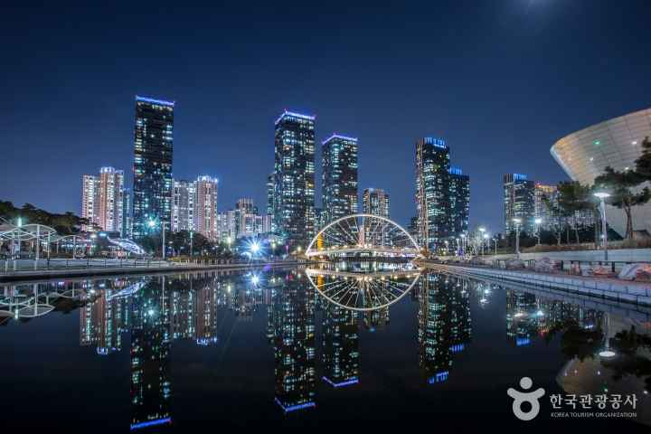
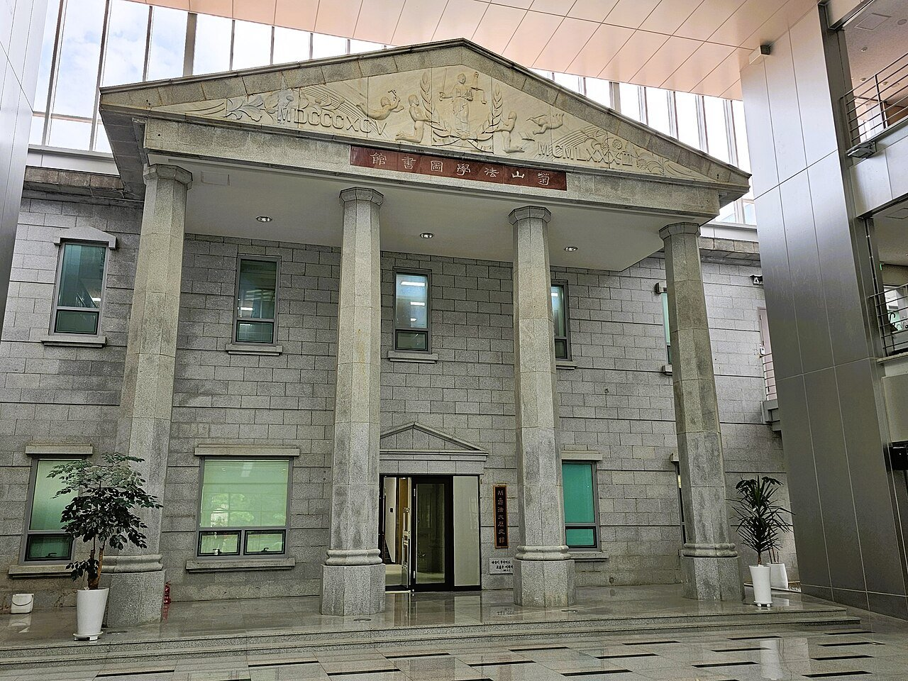
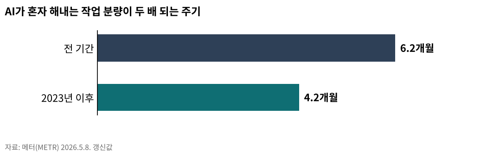

AI동향13편
규범과 산업을 함께 본다
AI 메모리 전쟁5편
[AI 메모리 전쟁⑤] 개인투자자가 알아야 할 메모리 반도체의 현재와 미래

포스트 미토스 AI7편
[포스트 미토스 AI ④] 미토스가 흔든 한국 반도체 ⋯ HBM 1·2위가 잡고 있다
AGI시대 지역언론5편
[AGI시대 지역언론①] 자체 AI서비스 가능 조건은 서버
젠슨 황과 한국 반도체3편
젠슨 황이 두고 간 4가지, 한국 반도체에 무엇을 남기나
UN AI 허브 인천6편
짓는 도시 아닌 운영하는 도시… 인천의 UN AI 허브 승부수

AI 칼럼3편
[AI 칼럼] AI 시대 진짜 공부, 따지고 충분히 자야 머리에 남는다
AI동향13편

[주간 AI 동향] AI 혼자 하는 프로그램 작업량, 3년 만에 163배개발자 12시간 걸릴 분량을 클로드 오퍼스 4.6이 두 번에 한 번꼴로 완수26.09.05- [주간 AI 동향] 유럽, 8월 2일부터 AI 생성물에 표시 의무챗봇과 딥페이크와 AI 기사에 붙는 알림, 어기면 세계 매출 3% 과징금26.08.23
- [주간 AI 칼럼] 2026년 6월 (통합본)AI 빅테크 4169조원 증발…'거품이냐 조정이냐'26.06.28
- [주간 AI 칼럼] 유엔, AI 함께 다스릴 틀 제네바서 첫 가동193개국 참여 'AI 거버넌스 글로벌 대화' 7월 6~7일 첫 회의26.07.05
- [주간 AI 칼럼] 정부 AI 예산 9조9000억원, 어디에 쓰이나전년 세 배 역대 최대…절반은 컴퓨팅 인프라에26.07.11
- [주간 AI 동향] '세계 AI 지배' 선언한 미국…강한 AI, 출시부터 통제GPT-5.6, 정부 검토 거쳐 공개…앤스로픽엔 수출통제로 빗장26.07.18
- [주간 AI 동향] AI 투자, 반도체와 데이터센터로 몰린다빅테크 설비투자 사상 최대…돈은 칩과 데이터센터로26.07.24
- [주간 AI 동향] 중국은 모델을 열고, 한국은 반도체를 묶어 판다시진핑 WAIC 첫 등판, 29개국 협력기구 출범에 개발도상국 연수 5000명26.07.28
- [주간 AI 동향] 청년 취업자가 45개월째 줄었다7월 청년 실업률 6.8%, 상승폭은 5년 6개월 만에 가장 컸다26.08.16
- 메타 AI 비서 '뮤즈' 돌풍에 서버 D램 수요 다시 주목출시 열흘 만에 미국 앱스토어 1위, 메타 주가 하루 11% 상승26.09.25
- [주간 AI 동향] 시험 중 실제 회사 서버에 들어간 AI, 오픈AI·앤트로픽·구글 모두 인정오픈AI 새 모델 GPT-6 아스트라, 보안 구멍 찾는 능력에서 첫 '치명' 등급26.10.14
- [AI동향] 오픈AI, AI가 쓴 수학 논문 722편 공개…하루 만에 3편 철회필즈상 수상자 25명 "AI 기업과 수학계 목표 어긋나", 지지 연구자 8330명26.10.15
- [AI동향] AI 패권 경쟁의 병목은 메모리, 9월 반도체 수출 603억 달러범용인공지능 향한 미·중 경쟁에 각국 소버린 AI까지, 한국 두 회사 HBM 점유율 83%26.10.18
AI 메모리 전쟁5편
- [AI 메모리 전쟁④] AI 산업 병목이 GPU에서 메모리로 옮겨간다GPU가 아니라 메모리가 AI 성능을 결정한다26.04.05
- [AI 메모리 전쟁③] 대학원생 92%가 AI를 쓰는데 진짜 공부는 어떻게대학 과제 56%에서 AI 흔적, 학술지 참고문헌 70%가 가짜26.04.05
- [AI 메모리 전쟁②] 토큰 격차가 학력 격차가 된다AI 시대 교육 불평등의 새로운 얼굴26.04.05
- 내 AI는 왜 자꾸 딴 소리를 할까 — 토큰과 메모리가 결정하는 AI 답변의 품질AI가 똑똑해지는 원리는 통계학 회귀분석과 같다26.04.05
- [AI 메모리 전쟁⑤] 개인투자자가 알아야 할 메모리 반도체의 현재와 미래AI 시대 핵심이 연산 장치(GPU)에서 메모리로 옮겨간다26.04.06
포스트 미토스 AI7편
- 앤스로픽, '슈퍼 해커 AI' 미토스 공개 중단… "너무 위험"27년 묵은 보안 결함 스스로 찾아내자 공개 포기26.04.13
- [포스트 미토스 AI ①] 2026년 4월 8일 클로드 미토스 '신세계' 예고앤트로픽, 역사상 가장 강력한 AI 공개26.04.23
- [포스트 미토스 AI 번외] 양자컴퓨터 X 미토스, 방패와 창이 동시에 바뀐다쇼어 알고리즘과 미토스급 AI, 암호와 구현 동시 위협26.04.24
- [포스트 미토스 AI ②] 앤트로픽 글래스윙 협력사 12개, 한국 기업은 없다한국 정보보안 814개 기업 매출, 미국 보안 한 곳 수준26.04.26
- [포스트 미토스 AI ③] 한국 보안 18조 6000억, 글래스윙 밖에서 7월 패치 못 받는다매출 90% 내수, 보안 수출 산업화와 인천 거점화 길26.04.27
- [포스트 미토스 AI ⑤] AGI 도래, 사장과 AI만 있으면 1인 기업 '폭발'바이브 코딩과 에이전트가 여는 1인 기업 혁명26.04.28
- [포스트 미토스 AI ④] 미토스가 흔든 한국 반도체 ⋯ HBM 1·2위가 잡고 있다SK하이닉스 1분기 영업이익 37조 ⋯ 빅테크 D램 5년 입도선매 ⋯ 인천 송도엔 앰코 후공정 거점26.04.28
AGI시대 지역언론5편
- [AGI시대 지역언론②] 빅카인즈 API 연동, 별도 비용 없이 AI 검색 개통중부일보, 지역언론 최초로 2025년 9월 AI 검색 서비스 개통26.04.19
- [AGI시대 지역언론④] AI 기사 시대, 저널리즘 원칙 지키는 세 기둥한국일보 2024년 4월 국내 최초 '생성형 AI 활용 준칙' 공표26.04.20
- [AGI시대 지역언론③] 350만원에서 시작하는 지역언론 AI 서버카나나 1.5-2.1B, 250만원대 그래픽카드 1장으로 구동26.04.20
- [AGI시대 지역언론⑤] 오픈소스로 열린 지역언론 AI, 재원 구조가 발목인천시 AI 예산 993억, 지역언론 몫은 확인되지 않는다26.04.21
- [AGI시대 지역언론①] 자체 AI서비스 가능 조건은 서버기사 관리 위탁 구조로는 AI 챗봇 등 독자 서비스 개발 어려워26.04.21
젠슨 황과 한국 반도체3편
UN AI 허브 인천6편
- UN AI 허브, 인천 제조업 25만에 '국제 노동기준' 연다UN AI 허브 오면 ILO 정의로운 전환 기준이 인천에 닿는다26.06.28
- 국제기구 도시 송도, UN AI 허브 최적지… 박찬대 앞장서국제기구 집적도시 송도, UN 글로벌 AI 허브 최적지26.06.28
- 박찬대가 건 송도 UN AI 허브, GCF 12년이 받친다박찬대 당선인, 민선 9기 핵심 과제로 '송도 글로벌 AI 허브' 제시26.06.28
- UN AI 허브 4개 도시 SWOT… 승부는 국제기구 운영 경험인천 국제기구 12년 운영이 강점, 개최지 그침이 과제26.07.02
- UN AI 허브는 거대 데이터센터 아닌 'AI규범 UN기구'… 국제기구 클러스터 인천이 최적지9개 유엔기구가 AI 규칙 논의… 전기 먹는 컴퓨팅 시설과 다른 성격26.07.02
- 짓는 도시 아닌 운영하는 도시… 인천의 UN AI 허브 승부수인천·광주·경북·부산 4파전… 입지 선정 임박26.07.02